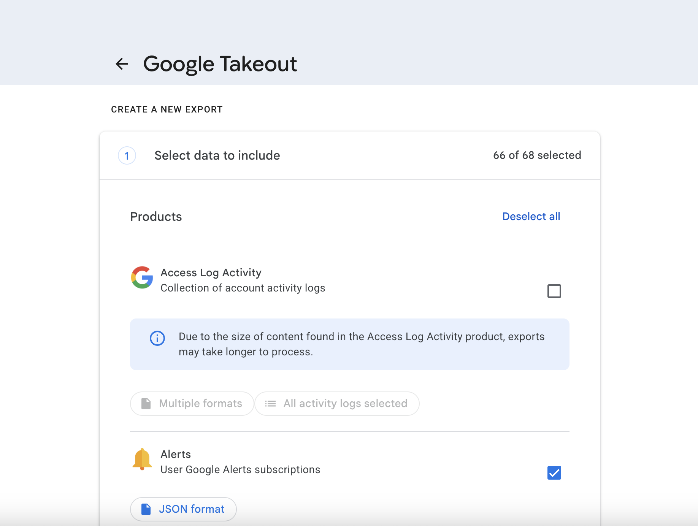
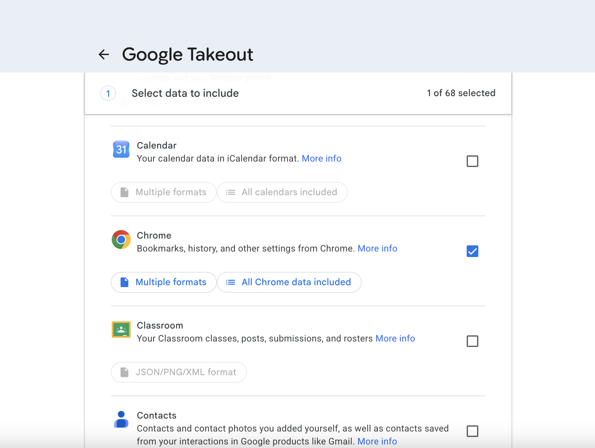
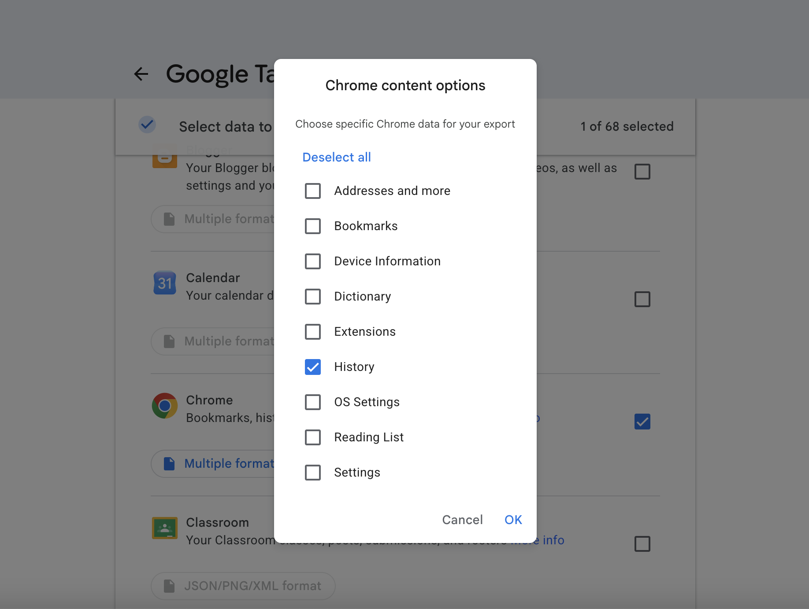
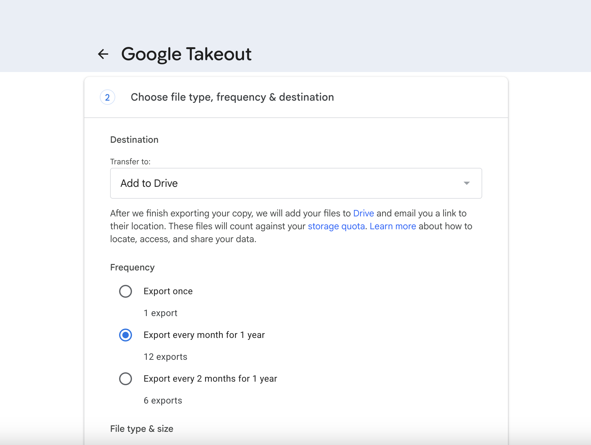
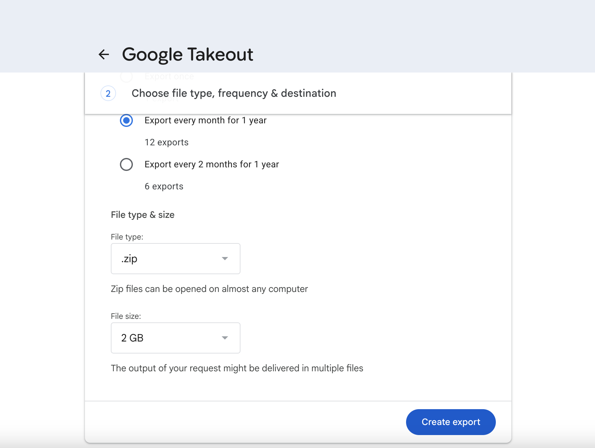
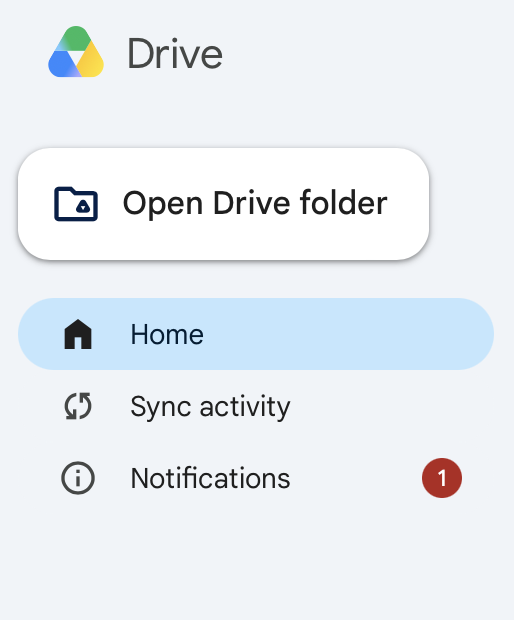
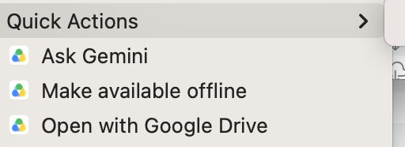

What the app does, how to read it, where your history comes
from, and what to do when something does not work.
Getting started
Wikipedia Wrapped shows what you have been reading on Wikipedia: a map
of the topics, the paths you took from one article to the next, and when
you read them. Everything is built from your own browsing history, on your
own computer.
The first time you open the app, a short setup asks
which Chrome profiles to read, whether you want to add Google Takeout
archives (optional), and whether to sync each time the app starts.
Click Save and start at the end.
The first sync reads your history, then looks up each
article on Wikipedia to find its topic and its place on the map. With a
lot of history this takes several minutes. Progress shows in a strip at
the top of the window, and you can use the app meanwhile. When it
finishes, the dashboard fills in.
After that, the app syncs each time it starts (unless
you turn that off), so new reading appears on its own. You can change
anything later from Settings in the top-right
corner.
Open the app at least once a month.
Chrome deletes history older than about 90 days. The app keeps a permanent
copy of every Wikipedia visit it has synced, but it can only save what
Chrome still has when it syncs. If you go three months without opening it,
the visits from that gap are gone for good (unless Google Takeout has them;
see Setting up Google Takeout).
Reading the dashboard
The large area shows one of two views; switch with the
UMAP and Threads buttons at
the top left. The panels on the left summarize the same history. Hover over
any article, in either view, to see its details and highlight it in the
panels.
The map (UMAP)
Each colored dot is an article you read. Articles
about similar things sit close together, so neighborhoods of the map are
subjects: one corner might be history, another physics.
Size is how many times you visited it.
Color is its topic, matching the category panel.
The faint grey dots are a fixed sample of Wikipedia
articles that defines the map's layout. They are the same for everyone,
so your map is comparable over time.
Scroll to zoom, drag to move around.
Hovering an article shows a card with its topic, your
visits, when you first read it, how many times other people viewed it
over the same period (n/a when that is not available), its
links in the threads view, and a link to the article.
"UMAP" is the name of the method that turns article descriptions into
positions on a flat map. An article only gets a position once its summary
has been looked up, so for a short while after a big sync some articles are
missing from the map; the header says so while that is the case.
The threads
Lines connect articles you read one after another:
two visits less than 15 minutes apart count as one reading session, and
the articles are linked in the order you read them.
Size shows how central an article is to your reading
(its PageRank): large articles are ones many of your reading paths lead
to.
Hover an article to highlight its connections and
fade everything else, so you can follow a thread.
The panels
Panel
Shows
Try
Categories: you vs popular pages
What share of the articles you read falls in each topic, next to
the same share for Wikipedia's most-viewed articles.
Click a topic to show only its articles; click the background or
press Escape to clear.
Visits per day
Your visits each day, with a 7-day average line.
Drag the grips to pick a date range, drag the filled bar to move
it, double-click to reset; the play button sweeps through time.
Time of day
When in the day you read (in your computer's time zone).
Click an hour to keep only articles read then; play steps through
the day.
The Panels button hides or shows the sidebar.
Drag the sidebar's right edge to make the panels bigger; double-click the
edge to reset. Press Escape to clear every selection at once.
Showing only some accounts. If your history comes from
more than one Google account (say, work and personal), choose which ones the
dashboard shows in Settings > Show in dashboard.
Hidden accounts are not deleted and keep syncing; a note in the header says
how many are hidden.
Where your data come from, and what leaves your computer
What the app reads
Google Chrome on this computer. The app reads the
history of the Chrome profiles you chose in setup. It reads a copy, so
Chrome can stay open.
Google Takeout archives, if you add a folder for them
(see below). These cover your whole Google
account, including other computers and your phone, and reach further
back than 90 days.
From all of these, the app keeps only visits to Wikipedia,
and only the article address, title, time, and which account it came from.
Everything else in your history is ignored and never stored.
What is sent over the internet
The titles of the Wikipedia articles you visited are
sent to Wikipedia's public services (run by the Wikimedia Foundation) to
look up each article's topic, summary, and popularity. Requests are
identified only as coming from "Wikipedia Wrapped".
Your other browsing, your name, and your account are not sent.
Only if you use the Advanced Google Drive option: the
app signs in to your own Google Drive (read-only) and downloads your
Takeout archives from it.
Nothing else leaves your computer. The language model that places
articles on the map comes with the app and runs locally. There are no
accounts, no analytics, and no servers of the app's own.
Setting up Google Takeout
Optional, but worth it if you want history from before the last 90 days,
or from your phone and other computers. Google Takeout exports the Chrome
history saved in your Google account (when Chrome sync is on). You set it
up once to repeat every two months, and point Wikipedia Wrapped at the
folder where the archives arrive. No sign-in to Google is needed in the
app.
Part 1: schedule the export in Google Takeout
Go to takeout.google.com
and sign in with the Google account whose Chrome history you want.
Products you use are already ticked. Click
Deselect all,
then tick Chrome only.
Under Chrome, click All Chrome data included
and leave only
History ticked.
This keeps the archives small. Click OK.
Scroll down and click Next step.
Delivery method: choose
Add to Drive. (Drive keeps the files until you
delete them; a download link sent by email expires after about 7
days.)
Export type (or frequency): choose
Scheduled exports. Google then makes a new
archive every 2 months for a year, starting now.
File type: choose Zip files.
The app cannot read the other type (.tgz).
Leave Archive size as it is, and click
Create export.

Deselect All">


History selected">

Export every month for 1 year">

File type > .zip">
The first archive can take anywhere from a few minutes to a few days;
Google emails you when it is ready. A scheduled export runs for one year;
after that, set it up again.
Part 2, option A: let Google Drive for desktop bring the archives in (recommended)
Find the folder Takeout delivers into: Takeout,
in My Drive.
Mac: in Finder, under
Locations in the sidebar, click
Google Drive, then
My Drive. (If Finder asks, click
Enable at the top right.) The folder lives
under ~/Library/CloudStorage.
Windows: open the Google Drive drive in File
Explorer (usually G:), then
My Drive.
Make the folder available offline. By default Drive
for desktop only downloads a file when something opens it (files that
are not downloaded show a cloud icon), and the app cannot read an
archive that is not on your computer while you are offline. Right-click
the Takeout folder, choose Offline access, then
Available offline (Windows) or Make available offline (Mac).
Alternatively, keep everything on your computer: Drive for desktop
Settings > Preferences > Google Drive, and
under My Drive syncing options choose
Mirror files.
In Wikipedia Wrapped, open Settings, and under
Google Takeout click
Add a folder... and choose that Takeout folder.
Give it a label, such as your Google email, so you can tell accounts
apart. The app shows how many archives it found.

Open Drive folder">

Open Drive folder > Make available offline">
Part 2, option B: download the archives yourself
When Google emails you that an archive is ready, download it. (If you
chose Add to Drive, download it from Drive; a
link sent by email expires after about 7 days.)
Put the downloaded takeout-....zip files in one folder,
for example a "Wikipedia Takeout" folder in Documents. Leave them as
zips; do not unzip them.
In Wikipedia Wrapped, add that folder in
Settings > Google Takeout. Repeat the
download every two months, when Google emails you.
What the app does with the archives. It
checks the folder (and folders inside it, up to 4 levels down) at every
sync, reads only the Chrome history inside each new archive, and keeps only
the Wikipedia visits. It never changes, moves, or deletes your archives; once
an archive has been synced you may delete it yourself, because its visits
are saved. Large exports are split into several zips; only one of them
holds the history, and the others are skipped quietly.
Advanced: signing in to Google Drive
Most people do not need this: a watched folder
does the same job without signing in. This option has the app fetch the
Takeout archives straight from Google Drive, using a Google Cloud project
you create yourself. Access is read-only: the app can list and download
files, and never changes or deletes anything in your Drive. The app never
sees your Google password.
1. Create your own OAuth client (once, in Google Cloud Console)
In APIs and Services > Library, find
Google Drive API and click
Enable.
Open Google Auth Platform. Set
Audience to External, and
fill in an app name and your email.
Under Audience > Test users, add every Google
account whose history you want to read.
Under Data access, add the scope
https://www.googleapis.com/auth/drive.readonly and nothing
else.
Under Clients, click
Create client, choose
Desktop app, and download the JSON file.
2. Connect it in Wikipedia Wrapped
Open Settings, then the
Advanced section.
Click Choose file... and pick the JSON file you
downloaded. The app checks it and keeps its own private copy.
Click Add a Google account.... Your browser
opens Google's sign-in; finish there and come back. Repeat for each
account.
Optionally enter the name of the Drive folder to search
(Takeout); leave it blank to search all of Drive.
Click Save. The next sync checks Drive.
About the 7-day sign-out. While your
Cloud project's app is in "Testing", Google signs it out after about 7
days. The app then marks the account as needing to sign in again (in the
progress strip and in Settings); click Sign in again
next to it. Your local Chrome history and any watched folders keep syncing
in the meantime.
Troubleshooting
No Chrome profiles found
The app reads Google Chrome only. Safari, Firefox,
Edge and other browsers are not supported.
Chrome keeps its history in your user account's folder. If you have
never opened Chrome while signed in to this computer as yourself, there
is nothing to read yet: open Chrome once, then reopen Settings.
Where the app looks:
Mac: ~/Library/Application Support/Google/Chrome
Windows: %LOCALAPPDATA%\Google\Chrome\User Data
If you use Chrome with sync turned on, Google
Takeout can still bring in your history from your Google
account.
No Takeout archives found
The first export can take hours or days. Check your email from
Google.
The app looks for files named takeout-...zip. A
.tgz archive cannot be read: choose
Zip files in Takeout.
Make sure you added the folder the archives are actually in. The app
looks up to 4 folders deep, but skips hidden folders and the Trash.
With Google Drive for desktop, the archive may still be syncing to
your computer. Wait for it to finish, and make the folder
available offline.
Sync problems
Problems from the last sync are listed at the top of
Settings, and the progress strip says how many
there were. None of them stops the app from working with the history it
already has. Common ones:
Message
What to do
"not a readable zip"
The archive is still downloading or syncing, or is damaged. It is
tried again at the next sync. If it keeps happening, download it
again.
"could not be read ... online-only Google Drive file"
Make the folder available offline in Drive for desktop, or connect
to the internet and sync again.
"Folder not found"
The folder is on a drive that is not connected, or it was moved or
renamed. Reconnect the drive, or change the folder in Settings.
"Cannot read the folder" (Mac)
macOS may be blocking access to Desktop, Documents, Downloads, or an
external drive. Allow it in System Settings > Privacy & Security
> Files and Folders.
Run the app's self-check. It tests the installation without opening
a window and prints PASS or FAIL for each
part; keep its output if you ask for help. In the commands, the
v0.1.0 folder is named after your version (there is only
one).
Mac, in Terminal: ~/Library/WikipediaWrapped-App/v0.1.0/bin/python ~/Library/WikipediaWrapped-App/v0.1.0/share/wikipedia-wrapped/launch.py --self-test
Windows, in Command Prompt: "%LOCALAPPDATA%\WikipediaWrapped-App\v0.1.0\python.exe" "%LOCALAPPDATA%\WikipediaWrapped-App\v0.1.0\share\wikipedia-wrapped\launch.py" --self-test
Uninstalling and installing again repairs a damaged installation.
Your data are kept (see Uninstalling).
Viewing the logs
The app writes a log of everything it does, including every sync, to
logs/app.log in its data folder (location below; the exact path
is also shown at the bottom of Settings). Older logs are kept as
app.log.1 to app.log.5. They are plain text: open
them in any text editor, or attach them when asking for help. They contain
article titles you read, so look through them before sharing.
Where your data are stored, and resetting
Everything the app saves is in one folder:
Computer
Folder
Mac
~/Library/Application Support/WikipediaWrapped
Windows
%APPDATA%\WikipediaWrapped
Linux
~/.local/share/WikipediaWrapped
On this computer:
Inside it
What it is
data/visits.jsonl
Your saved history: the one file worth backing up.
It is the only copy of visits Chrome has since deleted.
data/app.db
The database the dashboard reads; rebuilt from
visits.jsonl if deleted.
config.local.toml
Your settings.
tokens/, client_secret.json
Only with the Advanced option: your Google
sign-in and OAuth client.
logs/, cache/, webview/
Logs, a speed-up cache, and the window's saved layout.
Resetting
Quit the app first.
Run setup again: delete config.local.toml.
The next launch shows the setup screens; your history is kept.
Rebuild the dashboard's database: delete
data/app.db (and app.db-wal and
app.db-shm next to it, if present). The next sync rebuilds
it from visits.jsonl and looks the articles up again,
which takes a while.
Start over completely: delete the whole folder.
Before deleting the folder, copy
data/visits.jsonl somewhere safe. It holds every
visit the app has ever saved; anything older than Chrome's 90 days exists
nowhere else, unless a Takeout archive has it.
Installing, updating and uninstalling
Installing
The installers are on the project's
Releases page.
Download the one for your computer:
Your computer
Download the file ending in
Mac with Apple silicon (M1 or later), macOS 11 or later
-macOS-AppleSilicon.pkg
Mac with an Intel processor, macOS 11 or later
-macOS-Intel.pkg
Windows 10 or 11, 64-bit
-Windows-x64.exe
Not sure which Mac you have? Choose
Apple menu > About This Mac: a
Chip line means Apple silicon; a
Processor line naming Intel means Intel. Skip the
Source code downloads on the same page: they are
the program's code, not an installer.
The installers are not yet signed by a registered developer, so your
computer asks you to confirm once before running each one.
On a Mac
Double-click the downloaded .pkg. The first time, macOS
refuses to open it because it cannot check the developer. Close the
message.
Choose Apple menu > System Settings, click
Privacy & Security in the sidebar, and scroll
down to Security. Next to the note about the
installer, click Open Anyway, enter your login
password, and confirm with Open. The button is
there for about an hour after you tried to open the file.
On macOS 14 or earlier you can instead Control-click the
.pkg in Finder, choose Open, then
Open again. (On macOS 11 and 12 the setting
above is in System Preferences > Security &
Privacy > General.)
Follow the installer. It installs for you only, without asking for an
administrator password. Near the end it sits still for a few minutes
while it prepares the app; notifications show it is still working.
Open the app: press Command-Space, type
Wikipedia Wrapped, and press Return. It is also in the
Applications folder inside your home folder (in
Finder, Go > Home); drag it to the Dock to
keep it there.
Screenshot placeholder: Privacy & Security, Security section, with Open Anyway
On Windows
Your browser may say the file is not commonly downloaded. In
Microsoft Edge, open the download's ... menu,
choose Keep, then
Show more > Keep anyway.
Double-click the .exe. Windows shows
Windows protected your PC: click
More info, then
Run anyway.
Follow the installer and keep its suggestions:
Just Me (no administrator needed) and the
folder it proposes. Installing takes a few minutes.
Open the app from the Start menu or from the shortcut on your
desktop.
Screenshot placeholder: Windows protected your PC, after clicking More info
On some Windows 11 computers Smart App Control
blocks unsigned apps outright, with no Run anyway.
It can only be turned off for every app at once (in
Windows Security > App & browser control >
Smart App Control settings), which you may prefer not to do; a
signed installer, planned for a later version, avoids this.
Updating to a new version
Quit the app, download the new installer, and run it the same way
(the confirmation step comes again for each new download). It installs
the new version and removes the old one. Your history and settings are
kept; if the new version brings a new map, your pages are placed on it
during the next sync.
Reinstalling the version you already have is refused: uninstall it
first, then install again.
Uninstalling
Uninstalling removes the program and keeps your data, so installing
again later picks up where you left off.
Mac: quit the app, open Terminal (in
Applications > Utilities), and run bash ~/Library/WikipediaWrapped-App/uninstall.sh
It removes the program (~/Library/WikipediaWrapped-App)
and the app in your Applications folder. Dragging the app to the Trash
is not enough: it leaves the program folder, about 2 GB, behind.
Windows: open Settings > Apps
> Installed apps (on Windows 10, Apps &
features), find Wikipedia Wrapped, and
choose Uninstall.
To remove your data as well, delete the data folder
(above) afterwards, after copying
data/visits.jsonl somewhere safe if you might want it. On a
Mac, in Finder choose Go > Go to Folder and
paste the folder's path; on Windows, paste
%APPDATA%\WikipediaWrapped into File Explorer's address
bar.